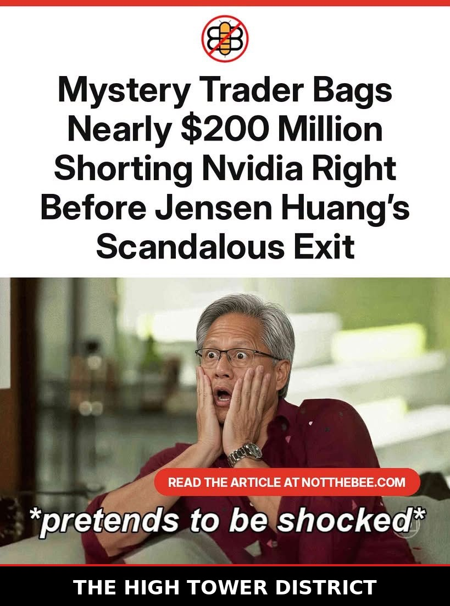

Viral headline, examined
A headline from Not the Bee says a mystery trader “bagged nearly $200 million shorting Nvidia right before Jensen Huang’s scandalous exit.” The trade underneath it exists. But the $196 million is a paper estimate, not banked profit, the position was placed a full month before the resignation, and its structure is a poor fit for someone who knew a CEO was about to fall. A smaller trade placed hours before the news is the one a forensic accountant would actually circle.
✓ The trade — verified
180,000 puts bought, 280,000 sold, ~$8M in
12 October 2026, reported identically by the FT (via quotation), The Times, and MarketSpeaker.
~ The $196M — an estimate
A mark-to-market calculation, not a payout
Per Macro Risk Advisors’ Joseph Niles. No source reports the trader ever closing the position.
✕ Insider trading — not established
No trader, no source, no regulator action
Identity unknown in public. No SEC or FINRA comment or inquiry found as of 14 Nov 2026.

The headline says “shorting Nvidia.” Nobody shorted stock here, so far as any source reports. What happened on 12 October 2026 was a two-legged options structure called a bear put ratio spread — and the shape of it is the single most important fact in the whole story, because shape is where intent hides.
Leg 1 — Bought
180,000 × $150 puts
The right to sell 18 million shares at $150. With the stock at ~$226, that strike sat ~34% below the market — deep out of the money. These puts only gain intrinsic value if Nvidia collapses by a third.
Leg 2 — Sold
280,000 × $100 puts
An obligation to buy 28 million shares at $100 if the stock falls that far — a strike ~56% below the market. Selling 100,000 more contracts than were bought collected premium that cut the entry cost to ~$8M — and left the trader exposed below $100.
Structure, quantities, and cost: Financial Times Alphaville as quoted verbatim by Not the Bee, 13 Nov 2026, corroborated by The Times and MarketSpeaker. The FT original could not be opened directly in this research (paywall/policy block), so its figures rest on that quotation plus two independent corroborations — strong, but second-hand for the FT itself. The exact January expiry day was not stated in the material read.
On 12 November, Nvidia closed at $166.19 — still above both strikes. That means both legs of this trade had zero intrinsic value. Every dollar of the ~$196M was time value and volatility value in January options: real on a screen, gone if the stock recovers, if implied volatility collapses, or if the trader holds to expiry and Nvidia finishes above $150 — in which case both legs expire worthless and the whole ~$8M premium is lost. MarketSpeaker states the point plainly: “The reported gain is an estimate of the trade’s profit, not a confirmed cash payout.” With 460,000 contracts, even exiting is non-trivial — a position that size moves the market against itself on the way out. Estimate, not realised
The classic insider options trade is a lottery ticket: cheap, near-dated puts struck just below the current price, expiring days after a known event. Small premium in, fortune out, loss capped at the ticket price. This trade fails that template on almost every dimension — most importantly, its loss is not capped at the $8M premium. Because the trader sold more puts than they bought, a fall past $100 starts eating the profit, and a wipeout loses roughly $108 million. Drag the slider to where Nvidia finishes at January expiry:
Checked points: $150 or above → −$8M (premium lost) · $100 → ≈ +$892M · $50 → ≈ +$392M · $10 → ≈ −$8M · $0 → ≈ −$108M. Note what this means for the insider theory: a trader who knew a resignation was coming and expected a typical 10–15% CEO-shock dip — to roughly $192 — would make nothing at expiry from this structure. It only pays on a multi-month collapse, or as a cheap hedge on a huge long position where the holder accepts risk below $100. Both readings fit a sophisticated institutional desk. Neither requires inside knowledge of a resignation.
And if it had been a plain short?
The version in the headline — borrow stock, sell it, buy it back cheaper — is even weaker evidence of anything. Shorting has unlimited risk and forces a cover decision within days or weeks; funds and thrill-seekers alike run large shorts on crowded, record-high stocks as a matter of routine. A profitable short proves a bearish view was right. It says nothing, by itself, about how the shorter formed that view.
Not the Bee frames the trade as placed “right before” Huang’s exit. It was placed 31 days before the announcement — 17 days before the first spy story, and a month before the board made any decision at all. For the October trader to have bet on the resignation, they would have needed to know on 12 October not just about an affair, but that it would produce a board decision on 11 November — at a time when no investigation had been opened.
The resignation-day move was $173.73 → $166.19 (−4.3%). The other ~21 points of the decline — and therefore most of the $196M mark — came from the month-long October–November sell-off in the AI/China trade. Attributing the gain to the resignation misattributes most of it.
Its 40-page “Nvidia: The China Problem” report calls Huang’s ties to Megaspeed executive Alice Huang “uncomfortably close” and discloses a short position. It does not allege an affair or espionage — but the proximity that later became the scandal was in the public domain six months before the trade. A public bear thesis existed. Seoul Economic Daily; Dealroom
460,000 contracts, ~$8M premium. At this date there is no public scandal, no investigation, and no board decision to know about.
Seventeen days after the trade, the New York Times reports a U.S. intelligence assessment concerning Alice Huang and Megaspeed. Allegation — unproven
Further reporting alleges recruitment by China’s Ministry of State Security. China denies the allegations; Nvidia says it has no evidence of chip diversion and no reason to believe secrets were compromised. No charge has been brought. Allegation — disputed
Huang’s admission of infidelity and the board’s independent investigation are reported — the first point at which a resignation becomes a foreseeable corporate event.
The only genuinely non-public item all month is the timing and outcome of this night’s board meeting. The resignation is accepted that night. WSJ; Nvidia Form 8-K
Nvidia’s Form 8-K announces Huang resigned as president, CEO, and board member effective immediately. CFO Colette Kress becomes interim CEO (keeping the CFO role); Harvey C. Jones becomes the board’s first chair. Framed as a resignation, not an ouster. Nvidia Form 8-K; USA Today
Buried under the viral trade is a smaller one that fits the forensic template far better. Options-flow reporting (FlowSeeker, via a social video — not a major outlet) says roughly 11,000 November 20 $105 puts were bought around 3:30 p.m. on Wednesday 11 November, reportedly 99% executed at the ask, and were up ~400% at the next morning’s open. Those last figures are Unverified — single source. What is partially corroborated: GreekSoup’s options tape shows open interest in that contract at 14,217, up +10,401 from the 11 November close — consistent with ~11,000 new contracts appearing that day. That supports that a large $105-put position appeared. It does not establish the time, the price, or the motive. A further detail in circulation — three put trades totalling ~$490,000 in the session’s last 15 minutes — was not independently found in public sources and is not treated as established here.
Why investigators would still look: at 3:30 p.m. on 11 November, a buyer was hours from market-moving news that was not yet public — the WSJ and NYT evening stories and the late-night board decision. That is the classic insider window. But note the honest limits: the $105 strike was still ~40% below the $173.73 close, so this was no clean “just below the market” ticket either; it needed a panic gap (the stock did trade to $148.80 intraday) just to multiply a few cents of premium through volatility. And by 11 November almost everything except the board’s decision was already public, while the stock had been falling for a week — a momentum trade on public information is a live innocent explanation.
| Forensic factor | 12 Oct ratio spread | 11 Nov $105 puts |
|---|---|---|
| Timing vs. news | 31 days before the announcement; before every public scandal milestone WEAK SIGNAL | Hours before evening reports and the board decision STRONG SIGNAL |
| Expiry | January — ~3 months; must survive earnings and volatility decay | 20 November — 9 days; pure event window STRONG SIGNAL |
| Strike logic | $150 / $100 vs. $226 — needs a 34–56% crash, not a resignation dip | $105 vs. $173.73 — ~40% below; needs a panic gap, not just the news MIXED |
| Size | $8M premium, 460,000 contracts — institutional, hard to hide or exit quietly | ~11,000 contracts — small; ~0.4% of that day’s contract volume, easier to conceal |
| Public alternative | Culper thesis, record valuation, crowded AI trade — all public in October | Affair, allegation, investigation, admission all public; stock already falling |
| Verdict | Weak evidence of insider trading — structure fits a bear thesis or hedge better | A genuine lead — suspicious on timing and expiry, still not proof |
Illegal insider trading is charged mainly under Section 10(b) of the Securities Exchange Act 1934 and SEC Rule 10b-5 (the DOJ prosecutes criminally, also under 18 U.S.C. § 1348). “The trade looks impossible unless they knew” is how an investigation starts. It is not an element of the offence. Here is what the government must actually establish — and what the public record holds on each element today:
Options count. This element is met on the reported facts for both trades.
A CEO resignation is plainly material once decided. A rumour, a personal affair with no established corporate consequence, or a mosaic of public facts is not automatically MNPI. On 12 October, the resignation had not been decided — arguably, there was no such information in existence to trade on.
The “classical” theory (a company insider) or “misappropriation” theory (a duty owed to the information’s source). A stranger who guesses right, or trades on public research, breaches no duty at all.
The trader must have known the information was confidential and disclosed in breach of a duty, and traded on the basis of it. In criminal cases, wilfulness.
The chain has to be documented: who knew, who told, who traded.
The consequence
Even if the October trader somehow knew about the affair in advance, that alone is not a case. The SEC would need to show the trader knew the resignation decision and its timing, got it through a breached duty, and traded because of it. Profit, size, and timing are circumstantial — the starting point of an investigation, never its conclusion.
Options feel like dark money because you never see a counterparty’s name. That anonymity is only skin-deep. The Options Clearing Corporation steps in as central counterparty between clearing members; your broker holds your name, address, tax ID, and account records under Exchange Act Rules 17a-3/17a-4; and under Rule 17a-25 (electronic blue sheets) the SEC or FINRA can compel any broker to produce, within days, the full record of every account that traded a security in a review period. FINRA and SEC surveillance systems (ARTEMIS, MIDAS, SONAR) already cross-reference options volume against corporate announcements and refer hundreds of cases a year. A 460,000-contract trade is visible to surveillance as a matter of routine.
Offshore or omnibus layering slows this chain; it rarely defeats it — the post-9/11 investigation traced its trades through exactly these records. So the correct description of the Nvidia trader is “unidentified to the public,” not untraceable.
Nvidia is the most heavily optioned single stock on earth — roughly 2.9 million contracts a day on average in the 20 sessions to late September 2026 ORATS via ApexVol. On 11 November alone: 2,961,613 contracts and ~$2.0 billion of premium ($1.1B calls, $876.6M puts). On 12 November: 9.53 million contracts. Against that flow, the October spread is ~16% of one average day’s contract volume and its $8M premium is ~0.4% of one day’s premium; the November puts are ~0.4% of that day’s volume. Big bearish bets on Nvidia are placed every single week. Most lose. A few, by construction, will be sitting there looking prophetic whenever bad news lands. Suspicion that ignores that denominator is not analysis — it is pattern-matching.
The pattern looked like a smoking gun: United Airlines put volume on 6 September 2001 exceeded call volume by more than 20-to-1; American Airlines puts surged on 10 September. The SEC and FBI, in the 9/11 Commission’s words, “devoted enormous resources” — and found every suspicious trade had an innocuous explanation:
The Commission’s conclusion: “the apparently suspicious consistently proved innocuous,” and no evidence anyone with advance knowledge profited. Balance note: academic work (Poteshman, Journal of Business, 2006) argued the AMR activity was statistically consistent with advance knowledge — the econometric debate is not settled. The lesson survives either way: volume + timing + profit did not equal proof. A documented, independent strategy is what cleared it. 9/11 Commission Report, ch. 5, fn. 130
Every prosecuted case has a person linked to the specific information by employment, access, or communications. The Nvidia record today has neither side of that ledger: no identified person, source, or communications — and also no documented hedge that would clear it. It sits at the start of an investigation, not the end of one.
This is the part worth naming plainly, because it is the business model Aaron flagged: outrage content that sells advertising by presenting an estimate as a fortune and a coincidence as a conspiracy. To its credit, Not the Bee quotes the FT passage accurately. Everything around the quotation does the misleading.
| Financial Times (as quoted / reported) | Not the Bee, 13 Nov 2026 | |
|---|---|---|
| The gain | “Has now made approximately $196mn — roughly 24 times the initial premium paid, according to MRA’s calculations” | Headline: “Bags Nearly $200 Million.” Closing line: “some mystery trader out there is now $200 million richer” — an estimate becomes a banked windfall |
| The cause | Attributes the gain to “the collapse in Nvidia’s share price since October” — a month-long decline | “Somebody would have made a cool $200 million shorting Nvidia because they might have known CEO Jensen Huang was about to be outed” — foreknowledge implied as the cause |
| The gaps | The FT item establishes no identity, no exit, no information source, no insider-trading allegation, no regulator involvement | None of those gaps is flagged. The “Whaaaaaaaaaaat?” framing and a “honeypot relationship (that many people don’t even believe is the real story)” aside invite the conspiracy reading the facts don’t supply |
And a word that does quiet damage: “dark money”
“Dark money” has a precise meaning, and this isn’t it. Per OpenSecrets, it is spending meant to influence political outcomes where the source is not disclosed — principally through 501(c)(4) and 501(c)(6) nonprofits, a phenomenon that grew from under $5.2M in 2006 to over $1B in the 2020 federal cycle. It has nothing to do with securities markets. Borrowing the term for an options trade does double harm: it imports the moral charge of secret political influence, and it implies the trader is untraceable when — per the blue-sheet chain above — regulators can identify them on request. Precision is not pedantry here; the wrong word is the conspiracy theory, smuggled in as vocabulary.
The High Tower District has been here before, on its own streets. The standing theory about Fresno homeless services — that shelters double-, triple-, or quadruple-bill for the same person at multiple places at once — has exactly the same shape as the Nvidia story: a pattern that looks damning, attached to a person, circulating faster than the records that would settle it. The forensic answer is the same in both ledgers, so it is worth laying side by side.
The verified Fresno record, stated carefully: Desiree “Dez” Martinez is president of the Fresno Homeless Union and founder of the Facebook page “Homeless in Fresno” and the group We Are Not Invisible — confirmed by a federal court order in Martinez et al. v. City of Fresno, No. 1:22-cv-00307 (E.D. Cal., 24 May 2022). She was arrested during a sweep and charged with interfering. No conviction has been found. No fraud evidence has been found. No fraud charge, audit finding, or financial record implicating Martinez or Fresno shelters in double-billing was located in this research. That sentence has to survive contact with anyone’s suspicions, including ours.
| Nvidia options | Fresno shelter billing | |
|---|---|---|
| The suspicious pattern | Large profit + suggestive timing | The same name appearing in several shelters’ counts and bills |
| What the pattern alone proves | Nothing about how — or whether — the trader knew anything nonpublic | Nothing about whether the same service, same night, was billed twice |
| Innocent explanations to exclude first | Hedging; a public bear thesis; luck in the busiest options market on earth; a volatility mark, not an event payoff | A person can be legitimately enrolled at several providers, receive different billable services the same day (bed-night, intake, outreach, case management are separate), transfer between shelters, or appear in “duplicated” contact tallies vs. “unduplicated” person counts. HMIS matching errors and data lags manufacture apparent duplicates |
| The base-rate trap | Millions of NVDA contracts daily; many bears, a few big winners — guaranteed | The system is designed for multi-provider contact. California’s own State Auditor (2024) found the state couldn’t track the effectiveness of ~$24B in homelessness spending — weak tracking makes fraud harder to detect and harder to prove. It cuts both ways |
| What proof requires | Identity + source of nonpublic information + breached duty + intent + trade on that basis | See the accountant’s list below |
(i) The contracts and rate schedules — what is actually billable, and what the contract defines as a duplicate. Sector contracts expressly require braided funding to be tracked “in a manner that prevents duplicate billing or claiming for the same cost” — because serving the same person under two funders is normal; billing the same cost twice is the violation. (ii) HMIS records — the Homeless Management Information System is the deduplication spine: unique client IDs, enrolment and exit dates, bed-night logs across providers. (iii) Invoices matched line-by-line to HMIS — same client, same date, same service, two funders = duplicate; different services or dates = not. (iv) Bank records and the general ledger — did money received match money billed, and where did it go? (v) Source documents — sign-in sheets, bed checks, case notes, staff rosters; a “ghost client” has none of them. (vi) Intent — knowing, systematic, and concealed, or definitional overlap and data error?
Federal prosecutors in Los Angeles have charged homeless-services fraud — ghost clients, bribery for referrals, billing for services never provided (the Soofer / Young / LAHSA cases, 2025–26). Those are different people, different organisations, a different county. They prove the scheme type exists. Importing them as evidence about Fresno or Martinez would be the identical error to importing the 9/11 put volume as evidence about the Nvidia trader.
The fallacy has a name
Both stories run on the prosecutor’s fallacy — base-rate neglect. An outcome can be unlikely if everyone is innocent and still be more likely innocent than guilty, when innocent explanations are vastly more common. Timing is necessary but never sufficient: in markets it must be joined to access and duty; in billing it must be joined to the same cost billed twice, and intent. “They must have known” is not a mechanism. Who told them? Which invoice, which funder, which date, which client ID? A pattern is a question. Records are the answer.
The viral headline is not evidence of insider trading. It is evidence that a large bearish bet paid off during a month when Nvidia fell ~27% for many public reasons — and, separately, that a smaller, shorter-dated bet was placed hours before the resignation became public. The first is a striking coincidence whose structure fits innocent explanations better. The second is a genuine red flag that warrants an investigation it does not, by itself, amount to.
That is the whole discipline, in markets and in Fresno alike: a suspicious pattern is a question, not an answer. The trader may be a thief, a hedger, or the luckiest bear of the month. The shelters may be clean, sloppy, or worse. Nobody honest gets to pick which one from a headline — and anybody selling you the pick before the records are in is selling something other than the truth.
All sources read or corroborated 14 Nov 2026. The FT original was verified through Not the Bee’s verbatim quotation plus The Times and MarketSpeaker, as noted in §01.